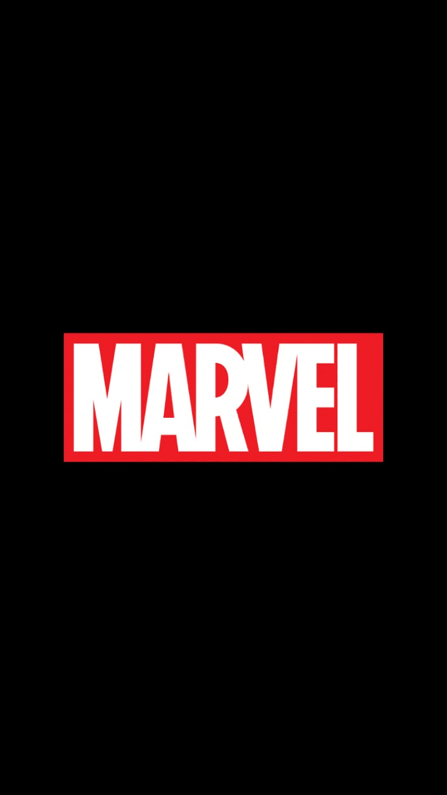
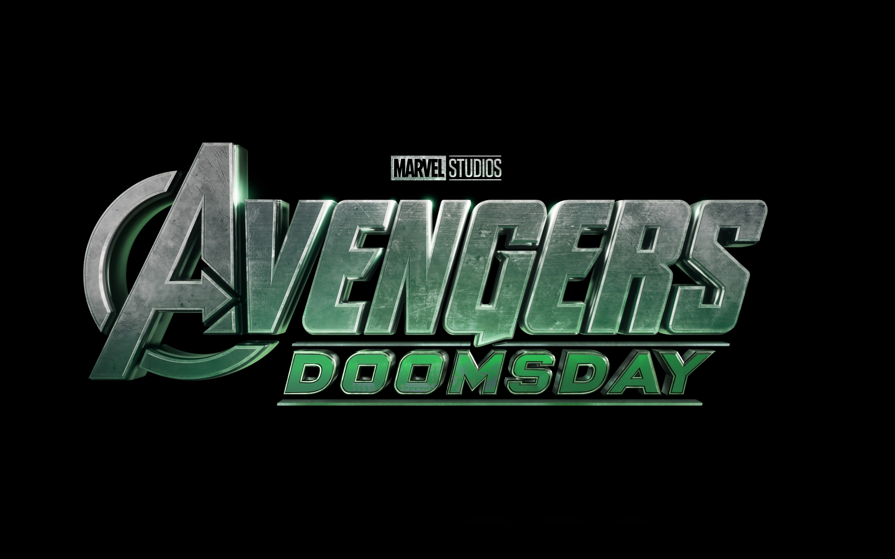
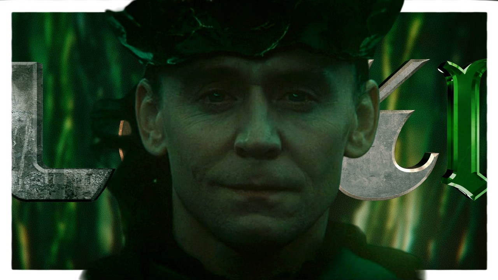
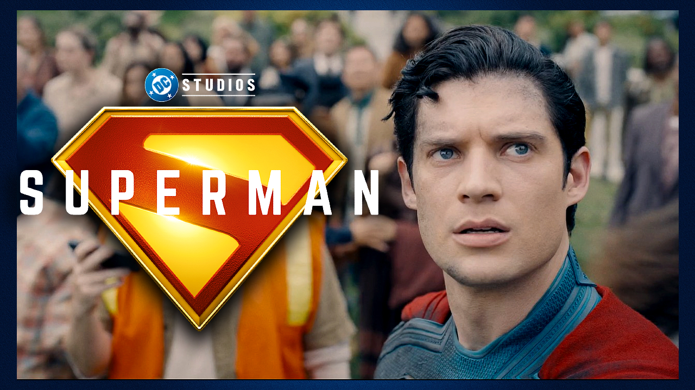

MARVEL
El Universo Cinematográfico de Marvel, sus héroes, sus villanos y las conexiones que construyen una gran historia.
EXPLORAR MARVEL
Héroes, villanos, universos alternativos y grandes historias. Exploramos el mundo de los superhéroes a través de resúmenes, opiniones, análisis y teorías.
EXPLORAR UNIVERSOSDetrás de cada máscara existe una historia. Desde los héroes que crecieron con nosotros hasta los grandes eventos que están transformando el cine de superhéroes. Aquí analizamos sus aventuras, sus decisiones y las conexiones que hacen especiales a estos universos.
Descubre nuestros contenidos sobre las dos grandes editoriales.

El Universo Cinematográfico de Marvel, sus héroes, sus villanos y las conexiones que construyen una gran historia.
EXPLORAR MARVELDesde Batman y Superman hasta los personajes más complejos de DC. Historias de heroísmo, justicia y grandes conflictos.
EXPLORAR DC
Durante meses hemos recorrido las películas y series más importantes del Universo Cinematográfico de Marvel para entender las conexiones que podrían conducirnos a Avengers: Doomsday. Desde Infinity War y Endgame hasta WandaVision, Loki y el multiverso, repasamos las historias que podrían ser fundamentales para este evento.
VER NUESTRA SAGAResúmenes, análisis y conexiones del Universo Marvel.


.jpg)
Dos personajes, un multiverso lleno de posibilidades.
VER VIDEO →
¿Qué significa su regreso para Avengers: Doomsday?
VER VIDEO →
.jpg)
La primera familia de Marvel y sus conexiones con Doctor Doom.
VER VIDEO →Historias de héroes, villanos y personajes inolvidables.



¿Qué conexiones podrían cambiar el futuro de nuestros héroes? Analizamos escenas postcréditos, personajes, acontecimientos y posibles caminos que podrían seguir estos universos.
DESCUBRIR MÁS
Descubre nuestras teorías, resúmenes y análisis directamente desde YouTube.